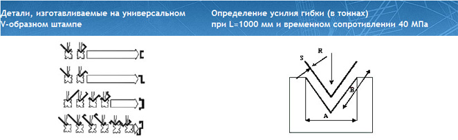
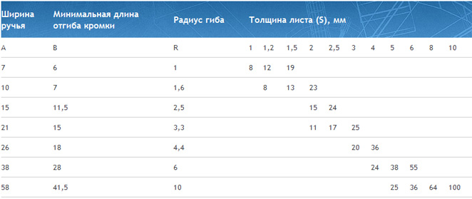

И1422
Пресс листогибочный гидравлический
1 200 000 ₽Под заказ
- Размеры станка
- 1710 х 890 х 1690 мм
- Масса
- 1780 кг
- Мощность главного привода
- 3,0 кВт
Назначение
Пресс листогибочный гидравлический модели И1422 усилием 160 кН предназначен для изготовления деталей из листового и полосового проката методом гибки. Пресс обладает высокой эффективностью производства и достаточной точностью при гибке листового металла.
Особенности
- В универсальном V-образном штампе, поставляемом в комплекте с прессом, можно производить гибку большого числа различных деталей. В специальных штампах, поставляемых за отдельную плату, может быть выполнена гибка сложных деталей за один переход, гибка по радиусу, штамповка и резка заготовок листа;
- Работа пресса обеспечивается гидросистемой с насосной установкой и гидропанелью управления. Гидропривод за рабочий ход обеспечивает быстрый подвод ползуна к заготовке, медленный ход при гибке и ускоренный отвод в исходное положение;
- Регулировка и настройка положения ползуна в зависимости от толщины изгибаемого листового материала производится посредством механизма регулировки межштампового пространства;
- Передний упор возможно использовать как приемный стол для небольших партий заготовок. Задний упор с указателем положения относительно линии гиба;
- Электро-схема обеспечивает работу прессов на одиночных ходах и в наладочном режиме;
- Управление прессами кнопочное двуручное и педальное;
- Смазка пресса ручная.
- Работа пресса обеспечивается гидросистемой с насосной установкой и гидропанелью управления. Гидропривод за рабочий ход обеспечивает быстрый подвод ползуна к заготовке, медленный ход при гибке и ускоренный отвод в исходное положение;
- Регулировка и настройка положения ползуна в зависимости от толщины изгибаемого листового материала производится посредством механизма регулировки межштампового пространства;
- Передний упор возможно использовать как приемный стол для небольших партий заготовок. Задний упор с указателем положения относительно линии гиба;
- Электро-схема обеспечивает работу прессов на одиночных ходах и в наладочном режиме;
- Управление прессами кнопочное двуручное и педальное;
- Смазка пресса ручная.




Характеристики
| ПАРАМЕТР | ЗНАЧЕНИЕ |
|---|---|
| Номинальное усилие пресса, кН (тс) | 160 |
| Длина стола и ползуна, мм. | 1450 |
| Расстояние между стойками станины в свету, мм. | 1350 |
| Пролеты ручьев матриц, мм. | 7, 10, 15, 20, 26, 38 |
| Толщина листа при макс. длине гибки, мм (при временном сопротивлении 450 Н/мм2) |
2,5 (А=38) |
| Макс. толщина изгибаемого листа на длине, мм (при временном сопротивлении 450 Н/мм2) |
4 х 520 |
| Наибольший ход ползуна, мм. | 50 |
| Ширина стола, мм. | 140 |
| Размер регулировки расстояния между столом и ползуном, мм. | 25 |
| Расстояние от оси ползуна до станины, мм. | 275 |
| Ход заднего упора, мм. | 210 |
| Скорость перемещения ползуна, мм/сек | 22 (рабочий ход) 39 (возвратный ход) |
| Мощность привода главного движения, кВт | 3,0 |
| Напряжение питания, В | 380 |
| Габаритные размеры (LxBxH), мм. | 1710 х 890 х 1690 |
| Масса, кг. | 1780 |